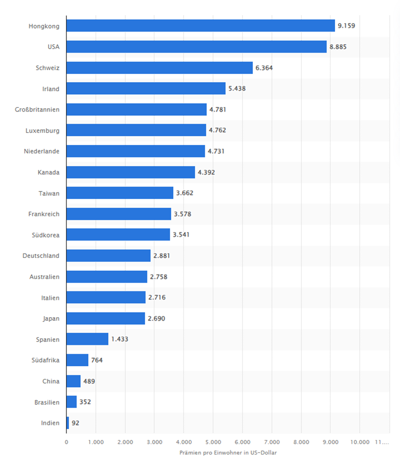

Sind Schweizer/innen gut/schlecht versichert im Vergleich zum Ausland?
Versicherungen sind in der Schweiz ein gutes Geschäft und sehr verbreitet.
"Ob Haftpflicht-, Auto- oder Lebensversicherung: Schweizer sind in der Regel gut versichert. Jeder Schweizer Haushalt ist versichert. Zumindest eine Krankenkasse muss vorhanden sein.", so das SRF.
Versicherungen sind ein zentraler Teil der Schweizer Volkswirtschaft. Ihr Umsatz ist fast gleich gross wie derjenige der Banken.
Wie viel geben Menschen in verschiedenen Ländern für Versicherungen aus?
Versicherungsdichte in ausgewählten Ländern weltweit im Jahr 2022 (Prämien pro Einwohner in US-Dollar)
(Prämien=Geldsumme, die für Versicherungsverträge ausgegeben wird)

Auf dieser Grafik kann man erkennen, dass die Schweizerinnen und Schweizer international zu den bestversicherten Personen gehören. Dennoch ist es schwierig einen solchen Vergleich durchzuführen, da in jedem Land die Versicherungen ganz anders funktionieren. Es ist auch unbekannt, welche Versicherungen alle gezählt wurden. Wenn man alle Versicherungen der Schweiz zusammenzählen würde durchschnittlich jede/r Schweizer/in CHF 12'000 bezahlen. Zudem sagt der Mittelwert wenig über einzelne Personen aus. In einem Land, welches viele Arme und wenige Reiche hat, sind die Reichen wahrscheinlich auch gut versichert, die Armen hingegen (fast) nicht.
Quellen:
- SRF.ch
- Statista.com